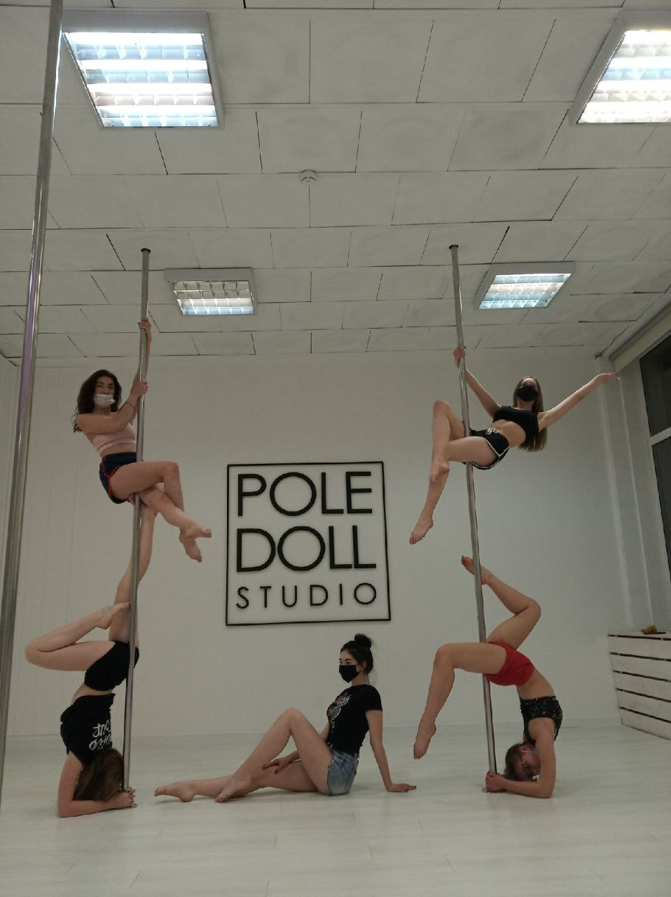
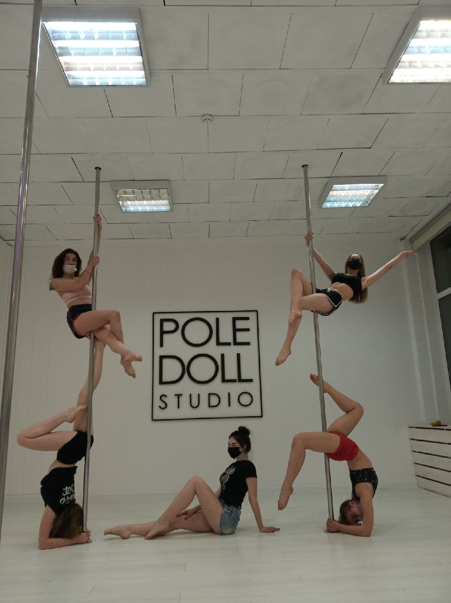

О себе
Меня зовут Арина. Мне 19 лет. Я живу и учусь в Минске в Академии управления на специальности "управление информационными ресурсами", поэтому основная часть моего времени уходит на учебу. Но я хотела бы рассказать чем я занимаюсь в свободное время, мои хобби и интересы.
Я неусидчивый человек, поэтому люблю постоянно чем-то заниматься, узнавать новое расширять свой кругозор. С детства мама водила меня на различные кружки: танцы, аэробика, бассейн, моделинг, английский язык, плетение соломкой, вышивка крестиком, бисером, папье-маше - в общем-то, список немаленький. И сейчас я продолжаю развиваться, искать себя и пробовать что-то новое с чем смогу связать последующую жизнь и работу. Мои хобби позволяют мне перезагрузиться, отвлечься, не думать о всевозможных проблемах.
Мое кредо по жизни: "Живи, наслаждайся и ни о чем не жалей"
Мои хобби - это не просто способ провести время. Это мои источники вдохновения, радости и самовыражения. Они делают мою жизнь ярче и интереснее, помогают мне расслабиться и зарядиться энергией для новых достижений.
Мои хобби
Танцы
Это слово ассоциируется у меня с детством. В 6 лет мама записала меня на танцы в наш ДК. Я занималась народным, классическим и современным стилями. Также дополнительно ходила на аэробику для растяжки. Дом культуры стал для меня очень родным местом. Постоянные концерты, конкурсы, соревнования, выезды за границу, праздники. Долгое время я даже хотела поступить на хореографа и связать с этим свою жизнь, настолько у меня горела душа. Танцы помогают мне разгружать свою голову, отвлекаться от постоянных серых будней. В 9 классе стала дополнительно ходить в эльгато на juzz-funk, очень нравилось это направление. В 10 классе ходила в polle-dolstudio и занималась пол-дэнсом. Интересное направление, но не горела прям этим. В связи с подготовкой к экзаменам в 11 классе этот путь приостановился. Однако на втором курсе я стала ходить в студию Elgato для возобновления своего хобби и думаю буду продолжать заниматься ещё долго. Я выбрала новое для себя направление juzz-funk и girly hip-hop (хип-хоп c элементами женственности). Ниже я прикрепила пару фотокарточек с танцев.
 

Также поступив в Академию я пошла на кастинг в сборную по чирлидингу и успешно его прошла. Я бы сказала, что это больше танцевальная аэробика с элементами чирлидинга. Мы учавствуем в сорвенованиях, конкурсах, на мероприятиях в самой Академии. В общем-то мне нравится эта деятельность тоже, а учиывая то, что она еще и заменяет физру, то вообще супер!
Чтение
Чтение - это способ познать мир, вырваться за пределы повседневности и погрузиться в бесконечные истории. Каждая книга - это путешествие, открытие новых горизонтов, знакомство с удивительными персонажами и захватывающими событиями. Каждая прочитанная книга оставляет в моей душе отпечаток, расширяет мой взгляд на жизнь, делает меня богаче внутренне и помогает лучше понимать себя и мир вокруг. Чтение - это мое убежище, моя страсть, мой способ пережить бесконечное количество жизней, не выходя из дома. Хоть я читаю и не каждый день, но я считаю это своим хобби, так как моментами меня прям накрывает. Я бы даже сказала появляется страсть и читаю взахлёб.
Я люблю погружаться в разные жанры: от классической литературы до современной фантастики, от захватывающих детективов до трогательных любовных романов, но самые любимые это фантастика и романы. "Хроники Нарнии", "Дюна", "Гарри Поттер", "Гордость и предубеждение", "Виноваты звезды", "Лолита", "Маленькие женщины", "О любви к себе", "Письмо Незнакомки", "Великий Гэтсби", "Искусство Любить", дететктивы Агата Кристи - пожалуй, можно долго перечислять то, что я читала. Как альтернативу я читаю клуб романтики, о котором я рассказала подробнее ниже.
Что такое клуб романтики?
Сборник интерактивных любовных романов, в которых игрок управляет судьбой персонажа, принимая множество решений во время прохождения каждой истории. На выбор игра предлагает несколько десятков сюжетов, разделенных на сезоны и серии. Новеллы разворачиваются в популярных и романтичных сеттингах: начинающая актриса в Голливуде, противостояние вампиров и оборотней, пираты в морях, проклятие Ацтеков, средневековая сказка и так далее. Одна из моих любимых прочитанных историй - это Легенда Иви. В общем-то очень удобное и функциональное приложение, учитывая то, что не всегда под рукой может быть книга; и иллюстрации являются приятным дополнением.
Просмотр сериалов и фильмов
Да, это я тоже выделяю, как свое хобби:). Кино - это бесконечный источник эмоций, новых знаний, и возможность посмотреть на мир с другой стороны.
<Также>Одна из любимых киновселенных - это конечно же Marvel, я готова, кажется, бесконечно пересматривать всю хронологию. Любимые в этой киновселенной, наверное, "Железный человек", "Черная пантера", "Мстители" и "Стражи Галактики". Сериалов можно перечислить уйму, но основные это от Netflixa и культовые, как Игра престолов, Ведьмак, Сотня, Доктор Хаус, Люцифер, Дневники Вампира. Сказать, что мне нравится какой-то определенный жанр, нет нисколько. Каждый подходит под разное настроение, так что на одном жанре я точно не остановлюсь. Русское кино я чаще выбираю, когда хочу посмотреть что-то легкое, непринужденное и среди учебной недели. Также я с удовольствием пересматриваю классические фильмы: "Унесенные ветром", "Красотка", "Завтрак у Тиффани", "Зеленая миля", "Рождение звезды", "Титаник", "1+1".Так что, если нужно посоветовать что посмотреть, обращайтесь ко мне!
Я люблю анализировать сюжетные линии, изучать режиссерские приемы и просто наслаждаться красотой кино. Фильмы и сериалы дают мне возможность отдохнуть от повседневных дел и погрузиться в новый мир, познакомиться с другими культурами и стилями жизни. И что самое главное, кино - это источник вдохновения. Оно помогает мне переосмыслить свои собственные мысли и чувства, понять мир чуть лучше и приобрести новый опыт, не выходя из дома.
Кукинг
Для кого-то это рутина, для кого-то - скучная необходимость. А для меня волшебство! Каждое блюдо - это маленькое произведение искусства, созданное из самых разных ингредиентов. Я люблю экспериментировать, создавать новые вкусовые сочетания и удивлять себя и близких. От простого салата до сложного десерта - каждая готовка - это маленький творческий акт. Бабушка и мама дали мне эту любовь. Еще в детстве мы собирались у бабушки в деревне пекли пирожки, рогалики, блинчики, трубочки - всё, что только возможно. А сестра привила традицию на праздники печь близким мне людям. Готовка ассоциируется у меня с чем-то теплым, родным, близким. Чувствую тишину, спокойствие и умиротворение в душе во время этого процесса. Ниже я показала часть своих творений
Путешествия
Я не могу назвать на 100% это своим хобби, пока не имею личного дохода. Но как у меня горит к этому душа, вы себе не представляете! Кажется, я знаю на что в будущем будет уходить большая часть денег
Путешествия - это моя возможность познакомиться с новыми культурами, погрузиться в атмосферу других стран и просто испытать что-то необычное. Каждая поездка - это новая глава в моей жизни, наполненная яркими впечатлениями и незабываемыми моментами.
Дополнительно
Помимо основного обучения я стараюсь всесторонне развиваться, обучаться чему-то новому. Это тажже связано с тем, что я не определилась на 100% со сферой деятельностью, с которой хочу связать свою жизнь, будущую карьеру. Обучаясь на специальности "УИР", я понимаю, что это область, охватывающая множество сфер деятельности, предметных областей и стоит углубиться в какую-то одну, по крайней мере попробовать.
Поэтому недавно я начала проходить IT-курсы по бизнес-анализу в IT-academy.
Почему именно эта сфера?
Также эта сфера мне близка, так как мне нравится облать product/project менеджера. А в этой области очень пригодятся знания бизнес-анализа, и в целом такой специалист будет более востребованным. Так что в дальнейшем будет проще переключиться на данную сферу. После успешного прохождения я планирую устроиться на стажировку, потом работу.
Как итог, я считаю, что любые знания никогда не будут лишними в жизнями. Нужно не бояться пробовать что-либо новое, браться за появлющиеся возможности. И в целом не бояться!